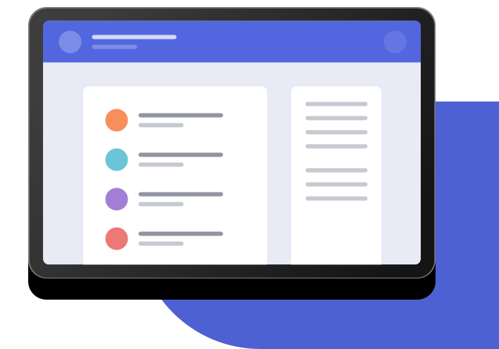

A Simple Bookmark Manager
A clean and simple interface to organize your favourite websites. Open a new browser tab and see your sites load instantly. Try it for free.
A clean and simple interface to organize your favourite websites. Open a new browser tab and see your sites load instantly. Try it for free.
Our aim is to make it quick and easy for you to access your favourite websites. Your bookmarks sync between your devices so you can access them on the go.
Organize your bookmarks however you like. Our simple drag-and-drop interface gives you complete control over how you manage your favourite sites.
More infoWe’ve got more browsers in the pipeline. Please do let us know if you’ve got a favourite you’d like us to prioritize.
Minimum version 62
Minimum version 55
Minimum version 46